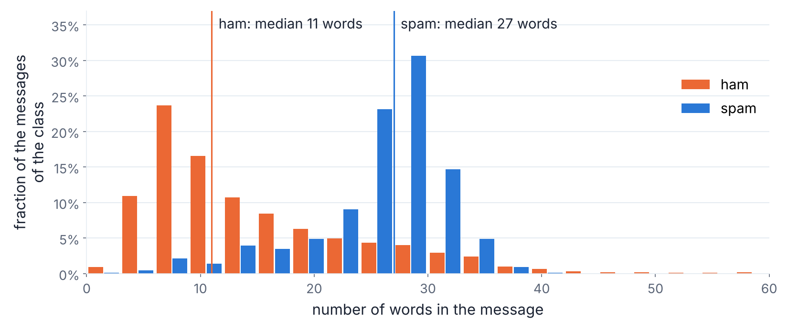
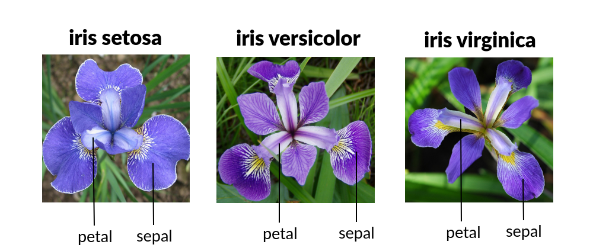
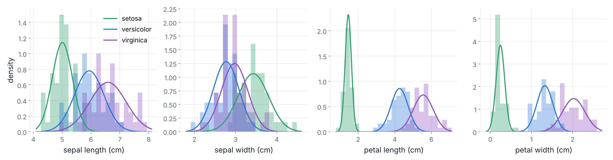
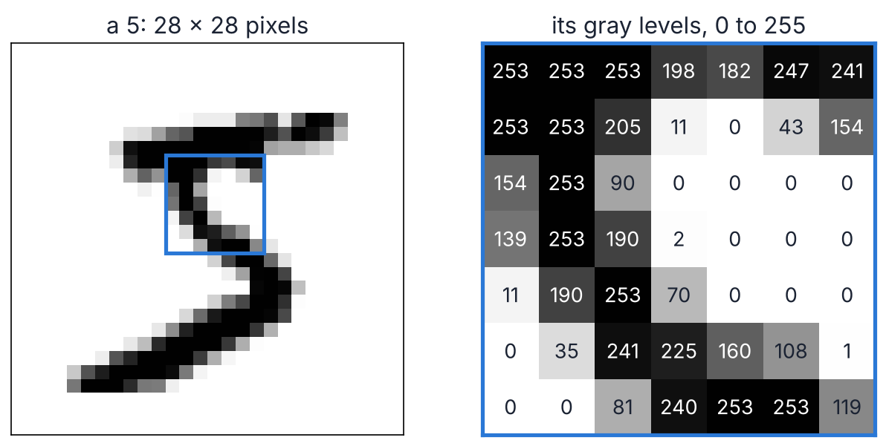
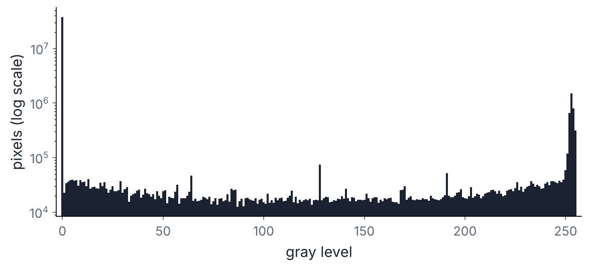
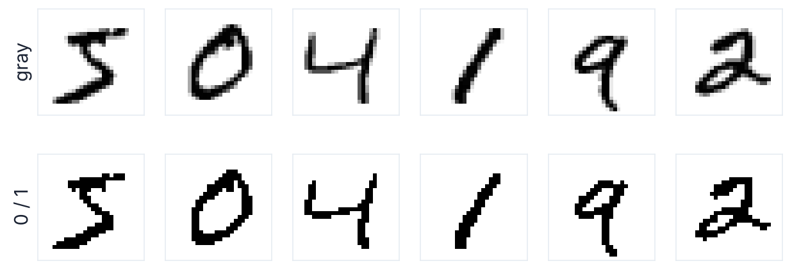
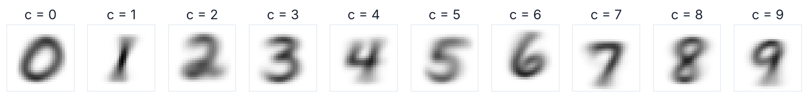
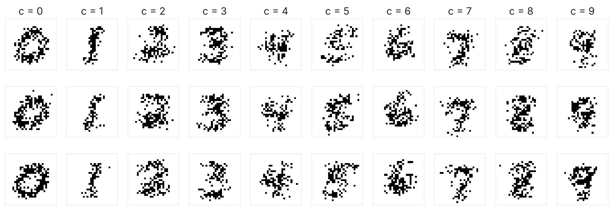
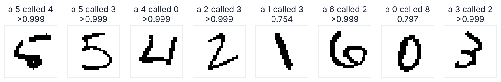

Conditional probability, Bayes' formula and independence, at work in a machine that reads digits.
Belal Alashqar
PhD student, Phystech School of Applied Mathematics and Computer Science
Draw a digit from 0 to 9.
By the end of today, we will build this machine from scratch.
Open the demo →A university checks essays with an AI detector. 1% of essays are written by AI. The detector flags 90% of AI essays, and it also wrongly flags 9% of human essays. An essay is flagged. What is the chance that it was written by AI?
Flagged: 9 + 89 = 98. AI among them: 9. → 9 / 98 ≈ 9.2% · Answer C
A probability space \((\Omega, \mathcal{F}, P)\): outcomes \(\Omega\), events \(\mathcal{F}\), probability \(P\).
\(A, B_i \in \mathcal{F}\), \(\;P(B_i) > 0\): \(\qquad P(A \mid B_i) = \dfrac{P(A \cap B_i)}{P(B_i)}\)
If \(P(B_i) > 0\): \(\qquad P(A \cap B_i) = P(B_i)\, P(A \mid B_i)\)
\(B_1, \dots, B_N\): no two of them overlap, and \(B_1 \cup \dots \cup B_N = \Omega\). Exactly one of them happens.
If \(B_1, \dots, B_N\) is a partition of \(\Omega\) and \(P(B_j) > 0\) for every \(j\), then for every \(A \in \mathcal{F}\):
\[ P(A) = \sum_{j=1}^{N} P(A \mid B_j)\, P(B_j) \]
If, in addition, \(P(A) > 0\), then for every \(i\):
\[ P(B_i \mid A) = \frac{P(A \mid B_i)\, P(B_i)}{\sum_{j=1}^{N} P(A \mid B_j)\, P(B_j)} \]
Why: \(\;P(B_i \mid A) = \dfrac{P(B_i \cap A)}{P(A)} = \dfrac{P(A \mid B_i)\,P(B_i)}{P(A)}\;\) (conditional probability, then the multiplication theorem), and \(P(A)\) from the total probability formula.
\(A\) = "the essay is flagged", \(B_1\) = "written by AI", \(B_2\) = "written by a human".
\(B_1, B_2\) is a partition: each essay is written by AI or by a human.
Given: \(P(B_1) = 0.01, \;\; P(B_2) = 0.99, \;\; P(A \mid B_1) = 0.90, \;\; P(A \mid B_2) = 0.09\)
\(P(A) = 0.90 \cdot 0.01 + 0.09 \cdot 0.99 = 0.009 + 0.0891 = 0.0981 \;>\; 0\)
\(P(B_1 \mid A) = \dfrac{0.009}{0.0981} \approx 0.092\) → 9.2%
The essays: prior \(P(B_1) = 1\%\) → posterior \(P(B_1 \mid A) \approx 9.2\%\).
The same detector: \(P(A \mid B_1) = 0.90, \;\; P(A \mid B_2) = 0.09\).
The new prior: \(P(B_1) = 0.10, \;\; P(B_2) = 0.90\).
\(P(A) = 0.90 \cdot 0.10 + 0.09 \cdot 0.90 = 0.09 + 0.081 = 0.171\)
\(P(B_1 \mid A) = \dfrac{0.09}{0.171} \approx 0.526\) → 52.6%
Your phone decides in a millisecond: spam or ham? How?
The test set stays hidden until the end. Testing on the training messages would be cheating.
\(k\)-fold cross-validation: split the data into \(k\) folds; \(k\) times, train on \(k-1\) folds and test on the remaining one; average the \(k\) results.
\(k = 10\): blue = the fold we test on, yellow = the folds we train on.
Spam is the positive class, ham the negative class.
| gold: spam | gold: ham | |
|---|---|---|
| predicted: spam | TP true positive | FP false positive |
| predicted: ham | FN false negative | TN true negative |
Positive class = written by AI. Of 1,000 essays: TP = 9, FN = 1, FP ≈ 89, TN ≈ 901.
\(\text{recall} = \dfrac{9}{9 + 1} = 90\% \;=\; P(A \mid B_1)\)
\(\text{precision} = \dfrac{9}{9 + 89} \approx 9.2\% \;=\; P(B_1 \mid A)\)
A great recall, a terrible precision. Precision is a posterior: it depends on the prior.
In our SMS data, 87.4% of the messages are ham. A filter answers ham for every message, without reading it. What is its accuracy? Is it a good filter?
accuracy = 87.4% · recall = \(\dfrac{0}{0 + \text{FN}}\) = 0: it never catches a spam.
Accuracy is misleading when one class is rare. So we look at precision and recall.
12 messages written with only 5 words: free, win, money, lunch, meeting.
New messages: "free money" and "free win money meeting". Ham or spam?
We keep only how many times each word appears. The order is thrown away.
| message | free | win | money | lunch | meeting |
|---|---|---|---|---|---|
| "win free free" | 2 | 1 | 0 | 0 | 0 |
| "free win free" | 2 | 1 | 0 | 0 | 0 |
\(V\) = the vocabulary: all words of the training messages, \(\lvert V \rvert = 5\).
\(\xi_w\) = how many times the word \(w\) appears in the message. \(\xi = (\xi_w)_{w \in V}\): the bag of words.
\(x = (x_w)_{w \in V}\): its observed value. \(n = \sum_{w \in V} x_w\): the length. \(\eta\): the class, ham or spam.
\(P(G_1 \cap G_2) = P(G_1)\, P(G_2)\)
If \(P(H) > 0\): \(G_1\) and \(G_2\) are conditionally independent given \(H\) if
\[ P(G_1 \cap G_2 \mid H) = P(G_1 \mid H)\, P(G_2 \mid H) \]
The same with \(P(\,\cdot \mid H)\) in place of \(P\). For several events: the product rule for every choice of some of them.
Neither one implies the other.
Naive Bayes assumption: given the class \(\eta = c\), the words of a message are conditionally independent: each word is drawn on its own, and it is \(w\) with probability \(p_c(w)\).
Like rolling a die with \(\lvert V \rvert\) faces \(n\) times. The counts of the faces have the multinomial distribution:
Assumptions: (1) bag of words, (2) naive Bayes assumption, (3) the length \(n\) says nothing about the class.
\[ P(\xi = x \mid \eta = c) = \frac{n!}{\prod_{w \in V} x_w!}\, \prod_{w \in V} p_c(w)^{x_w} \]
2 faces: the binomial distribution. The coefficient: the multinomial theorem. "Naive": real words are not independent.
Bayes' formula: partition \(B_1 = \{\eta = \text{ham}\},\; B_2 = \{\eta = \text{spam}\}\), evidence \(A = \{\xi = x\}\)
\(P(\eta = c \mid \xi = x) = \dfrac{P(\xi = x \mid \eta = c)\, P(\eta = c)}{P(\xi = x)}\)
\(P(\xi = x)\) and \(\frac{n!}{\prod x_w!}\) are the same for both classes: they cannot change which class wins.
\(\hat{c} = \operatorname*{argmax}_{c}\; \hat{P}(\eta = c) \prod_{w \in V} \hat{p}_c(w)^{x_w}\)
The hat \(\hat{\ }\) means "estimated from the training data". \(\hat{c}\): the predicted class.
Prior: \(\hat{P}(\eta = c) = \dfrac{m_c}{m}\): \(\hat{P}(\eta = \text{ham}) = \dfrac{8}{12}, \;\; \hat{P}(\eta = \text{spam}) = \dfrac{4}{12}\)
\(\text{count}(w, c)\): how often \(w\) appears in all training messages of class \(c\).
| free | win | money | lunch | meeting | all words | |
|---|---|---|---|---|---|---|
| ham | 1 | 0 | 2 | 6 | 6 | 15 |
| spam | 4 | 3 | 4 | 0 | 0 | 11 |
First try: \(p_c(w) \approx \dfrac{\text{count}(w, c)}{\sum_{w' \in V} \text{count}(w', c)}\), e.g. \(p_{\text{spam}}(\text{free}) \approx \dfrac{4}{11}\)
ham: \(\dfrac{8}{12} \cdot \dfrac{1}{15} \cdot \dfrac{2}{15} = \dfrac{4}{675} \approx 0.0059\)
spam: \(\dfrac{4}{12} \cdot \dfrac{4}{11} \cdot \dfrac{4}{11} = \dfrac{16}{363} \approx 0.0441\)
Spam wins. Normalize (Bayes' formula): \(\dfrac{0.0441}{0.0441 + 0.0059} \approx\) 0.88 spam.
"free" also appears in ham ("free lunch"): one word is not a proof.
ham: \(\dfrac{8}{12} \cdot \dfrac{1}{15} \cdot \dfrac{\mathbf{0}}{15} \cdot \dfrac{2}{15} \cdot \dfrac{6}{15} = 0\) ("win" never appears in ham)
spam: \(\dfrac{4}{12} \cdot \dfrac{4}{11} \cdot \dfrac{3}{11} \cdot \dfrac{4}{11} \cdot \dfrac{\mathbf{0}}{11} = 0\) ("meeting" never appears in spam)
0 against 0: the model cannot decide!
One word never seen in a class makes the whole product 0, whatever the other words say.
\[ \hat{p}_c(w) = \frac{\text{count}(w, c) + 1}{\sum_{w' \in V} \text{count}(w', c) + \lvert V \rvert} \]
ham: \(\dfrac{8}{12} \cdot \dfrac{2}{20} \cdot \dfrac{1}{20} \cdot \dfrac{3}{20} \cdot \dfrac{7}{20} \approx 0.000175\) spam: \(\dfrac{4}{12} \cdot \dfrac{5}{16} \cdot \dfrac{4}{16} \cdot \dfrac{5}{16} \cdot \dfrac{1}{16} \approx 0.000509\)
\(\hat{P}(\eta = \text{spam} \mid \xi = x) = \dfrac{0.000509}{0.000509 + 0.000175} \approx\) 0.74 → spam.
A word not in \(V\) at all (an unknown word) is simply removed from the message.
A real message has many words. A product of many small numbers becomes exactly 0.0 in the computer.
In the notebook: a message of 600 words → product of probabilities = 0.0, sum of logarithms = −944.9.
\[ \hat{c} = \operatorname*{argmax}_{c} \Big[ \log \hat{P}(\eta = c) + \sum_{w \in V} x_w \log \hat{p}_c(w) \Big] \]
The logarithm is increasing, so the same class wins. \(\log\) = natural logarithm.
A language model gives a probability to each possible next word, given the words before it. Large language models are trained to predict the next word.
Naive Bayes is a unigram language model, one per class: \(p_c(w)\) does not look at the words before.
Which sentence is more likely?
all of a sudden I notice three guys standing on the sidewalk
on guys all I of notice sidewalk three a sudden standing the
Naive Bayes: exactly the same probability (the same bag of words). A language model: the first, by far.
Most messages are ham: the lazy "always ham" filter gets 87.4% accuracy.
We keep every word: common words like "to" and "a" are not removed.

Assumption (3) said: the length \(n\) says nothing about the class. False! The model is naive, on purpose.
Trained on 4,136 messages (80%), tested on 1,035 new ones (20%).
| gold: spam | gold: ham | |
|---|---|---|
| predicted: spam | 114 | 2 |
| predicted: ham | 12 | 907 |
precision = 114 / 116 ≈ 0.983
recall = 114 / 126 ≈ 0.905
accuracy ≈ 0.986
"always ham" on the same test set: accuracy 0.878, recall 0.
10-fold cross-validation on the training set (mean): precision 0.972, recall 0.919, accuracy 0.986.
Opens notebooks/spam.ipynb in JupyterLab, started in the project folder (port 8888).
Watch the video or read the lesson. Look at the "Steve" example (librarian or farmer?): why the prior matters, the same lesson as our AI-detector question.
Jurafsky & Martin, Appendix B (PDF)
Read sections B.1–B.3 (pp. 1–7): the naive Bayes classifier, training, Laplace smoothing, a worked example. Then sections B.7–B.8 (pp. 11–15): the confusion matrix, precision, recall, cross-validation. Optional: section B.6 (pp. 10–11), naive Bayes as a language model.
Challenge: write a spam message that the filter calls ham.

We measure a flower with a ruler. Can a machine tell its species?
| flower | sepal length | sepal width | petal length | petal width | species |
|---|---|---|---|---|---|
| 1 | 5.1 | 3.5 | 1.4 | 0.2 | setosa |
| 51 | 7.0 | 3.2 | 4.7 | 1.4 | versicolor |
| 101 | 6.3 | 3.3 | 6.0 | 2.5 | virginica |
\(\zeta = (\zeta_1, \zeta_2, \zeta_3, \zeta_4)\): the 4 measurements of a flower, a random vector. \(z = (z_1, z_2, z_3, z_4)\): its observed value.
\(\eta\): the class, now one of the 3 species. The measurements are the features of a flower.

Setosa is easy. Versicolor and virginica overlap a little: there the machine will make its mistakes.
Words were counted: 0, 1, 2, … Lengths are real numbers. We need densities.
\(\zeta_\ell\) has the PDF \(f_{\zeta_\ell} \ge 0\) if, for all \(\alpha \le \beta\): \(\qquad P(\alpha \le \zeta_\ell \le \beta) = \displaystyle\int_{\alpha}^{\beta} f_{\zeta_\ell}(t)\, dt\)
Probability = area under the PDF. The whole area: \(\int_{-\infty}^{+\infty} f_{\zeta_\ell}(t)\, dt = 1\).
\(\mathcal{N}(a, \sigma^2)\) has the PDF \(\quad \dfrac{1}{\sqrt{2\pi\sigma^2}}\, e^{-\frac{(t - a)^2}{2\sigma^2}}\)
mean \(a\), variance \(\sigma^2\), standard deviation \(\sigma = \sqrt{\sigma^2}\)
Carlos writes a PDF as \(p\). Here \(p\) is taken by the word probabilities \(p_c(w)\), so we write \(f\).
Setosa petal width: mean 0.25 cm, standard deviation 0.10 cm. Its normal PDF at 0.25 cm is 3.82. So the probability that a setosa petal is exactly 0.25 cm wide is 3.82?
No. 3.82 is a density, not a probability. A PDF can be larger than 1.
Exactly 0.25 cm: probability 0. An interval has a probability. In the fitted normal model: \(P(0.24 \le \zeta_4 \le 0.26 \mid \eta = \text{setosa}) \approx 0.076 \approx 3.82 \cdot 0.02\)
area ≈ height × width

| spam | iris | |
|---|---|---|
| features | word counts \(x_w\): 0, 1, 2, … | lengths \(z_\ell\) in cm: real numbers |
| given the class | multinomial distribution | a normal distribution for each feature |
| we compute | probabilities \(P(\xi = x \mid \eta = c)\) | densities \(f_{\zeta \mid \eta}(z \mid c)\) |
The fitted normal gives setosa a negative petal width with probability ≈ 0.009! Only an approximation.
Bayes' formula needs \(P(A) > 0\). But \(P(\zeta = z) = 0\) for every \(z\)!
If \(P(\eta = c) > 0\) for every class \(c\), \(\zeta\) has a conditional PDF \(f_{\zeta \mid \eta}(\cdot \mid c)\) given each class, and \(f_\zeta(z) > 0\):
\[ P(\eta = c \mid \zeta = z) = \frac{f_{\zeta \mid \eta}(z \mid c)\, P(\eta = c)}{\sum_{c'} f_{\zeta \mid \eta}(z \mid c')\, P(\eta = c')} \]
Why: replace \(\{\zeta = z\}\) by a tiny box around \(z\). Its probability ≈ density × size of the box, and the size cancels in the fraction.
The same story: posterior = update × prior / normalization constant. The update is now a density.
A density of 4 variables is hard to estimate from 150 flowers. So we assume:
Given \(\eta = c\), the features \(\zeta_1, \dots, \zeta_4\) are mutually conditionally independent: independent under \(P(\,\cdot \mid \eta = c)\). Then
\[ f_{\zeta \mid \eta}(z \mid c) = \prod_{\ell=1}^{4} f_{\zeta_\ell \mid \eta}(z_\ell \mid c) \]
For independent random variables, the PDF of the vector is the product of their PDFs.
Spam: the words, given the class. Iris: the 4 measurements, given the species. The same idea.
Gaussian: given \(\eta = c\), each \(\zeta_\ell \sim \mathcal{N}(a_{c,\ell}, \sigma^2_{c,\ell})\). 3 × 4 = 12 normal distributions.
\(f_{\zeta \mid \eta}(z \mid c) = \displaystyle\prod_{\ell=1}^{4} \frac{1}{\sqrt{2\pi\sigma^2_{c,\ell}}}\, e^{-\frac{(z_\ell - a_{c,\ell})^2}{2\sigma^2_{c,\ell}}}\)
The denominator of Bayes' formula is the same for all species: it cannot change which species wins.
\[ \hat{c} = \operatorname*{argmax}_{c} \Big[ \log \hat{P}(\eta = c) + \sum_{\ell=1}^{4} \log \hat{f}_{\zeta_\ell \mid \eta}(z_\ell \mid c) \Big] \]
\(\hat{f}_{\zeta_\ell \mid \eta}(\cdot \mid c)\): the normal PDF with the estimates \(\hat{a}_{c,\ell}\), \(\hat{\sigma}^2_{c,\ell}\).
Recall: \(\operatorname{corr}(\zeta_\ell, \zeta_{\ell'}) = \frac{\operatorname{cov}(\zeta_\ell, \zeta_{\ell'})}{\sqrt{\operatorname{Var}\zeta_\ell}\sqrt{\operatorname{Var}\zeta_{\ell'}}} \in [-1, 1]\). Independent \(\Rightarrow\) cov = 0 \(\Rightarrow\) corr = 0. So corr far from 0 means not independent.
| SL | SW | PL | PW | |
|---|---|---|---|---|
| SL | 1 | −0.12 | 0.87 | 0.82 |
| SW | −0.12 | 1 | −0.43 | −0.37 |
| PL | 0.87 | −0.43 | 1 | 0.96 |
| PW | 0.82 | −0.37 | 0.96 | 1 |
| SL | SW | PL | PW | |
|---|---|---|---|---|
| SL | 1 | 0.46 | 0.86 | 0.28 |
| SW | 0.46 | 1 | 0.40 | 0.54 |
| PL | 0.86 | 0.40 | 1 | 0.32 |
| PW | 0.28 | 0.54 | 0.32 | 1 |
SL, SW = sepal length, sepal width · PL, PW = petal length, petal width
PL and PW: 0.96! Does this break naive Bayes? Not by itself: the assumption is about one species at a time.
Inside virginica: PL and PW 0.32, but SL and PL 0.86. The assumption is false.
Prior: \(\hat{P}(\eta = c) = \dfrac{m_c}{m} = \dfrac{50}{150} = \dfrac{1}{3}\) for each species.
For each species \(c\) and feature \(\ell\): \(\qquad \hat{a}_{c,\ell} = \dfrac{1}{m_c} \sum_{\text{class } c} z_\ell, \qquad \hat{\sigma}^2_{c,\ell} = \dfrac{1}{m_c} \sum_{\text{class } c} (z_\ell - \hat{a}_{c,\ell})^2\)
The maximum-likelihood estimates. We divide by \(m_c\), not by \(m_c - 1\).
Trained on all 150 flowers: mean (standard deviation) in cm.
| sepal length | sepal width | petal length | petal width | |
|---|---|---|---|---|
| setosa | 5.01 (0.35) | 3.43 (0.38) | 1.46 (0.17) | 0.25 (0.10) |
| versicolor | 5.94 (0.51) | 2.77 (0.31) | 4.26 (0.47) | 1.33 (0.20) |
| virginica | 6.59 (0.63) | 2.97 (0.32) | 5.55 (0.55) | 2.03 (0.27) |
\(z = (7.0,\; 3.2,\; 4.7,\; 1.4)\), the model of the previous slide.
| \(\log \hat{P}(\eta = c)\) | \(\ell = 1\) | \(\ell = 2\) | \(\ell = 3\) | \(\ell = 4\) | sum | |
|---|---|---|---|---|---|---|
| setosa | −1.10 | −16.19 | −0.12 | −176.53 | −59.84 | −253.78 |
| versicolor | −1.10 | −2.42 | −0.71 | −0.60 | +0.64 | −4.19 |
| virginica | −1.10 | −0.67 | −0.03 | −1.53 | −2.27 | −5.60 |
Columns \(\ell = 1, \dots, 4\): \(\log \hat{f}_{\zeta_\ell \mid \eta}(z_\ell \mid c)\), rounded to 2 decimals.
Versicolor wins: \(\hat{c} = \text{versicolor}\), the true species.
\(\hat{P}(\eta = \text{versicolor} \mid \zeta = z) = \dfrac{e^{-4.19}}{e^{-253.78} + e^{-4.19} + e^{-5.60}} \approx\) 0.80, virginica ≈ 0.20, setosa ≈ 0.
\(+0.64 > 0\): the density \(\hat{f}_{\zeta_4 \mid \eta}(1.4 \mid \text{versicolor}) \approx 1.90 > 1\). A density, again.
The trained model, mean (standard deviation) in cm:
| sepal length | sepal width | petal length | petal width | |
|---|---|---|---|---|
| setosa | 5.01 (0.35) | 3.43 (0.38) | 1.46 (0.17) | 0.25 (0.10) |
| versicolor | 5.94 (0.51) | 2.77 (0.31) | 4.26 (0.47) | 1.33 (0.20) |
| virginica | 6.59 (0.63) | 2.97 (0.32) | 5.55 (0.55) | 2.03 (0.27) |
| flower | measurements (cm) | true species | the classifier says |
|---|---|---|---|
| 1 | 5.1, 3.5, 1.4, 0.2 | setosa | setosa 1.00 |
| 51 | 7.0, 3.2, 4.7, 1.4 | versicolor | versicolor 0.80 |
| 78 | 6.7, 3.0, 5.0, 1.7 | versicolor | virginica 0.92 ✗ |
| 120 | 6.0, 2.2, 5.0, 1.5 | virginica | versicolor 0.96 ✗ |
The number after the species: its posterior \(\hat{P}(\eta = \hat{c} \mid \zeta = z)\). On all 150 flowers: 144 right, 6 wrong (flowers 53, 71, 78, 107, 120, 134).
As for the spam filter: trained on 120 flowers (80%), tested on 30 new ones (20%).
| gold: setosa | gold: versicolor | gold: virginica | |
|---|---|---|---|
| predicted: setosa | 8 | 0 | 0 |
| predicted: versicolor | 0 | 11 | 0 |
| predicted: virginica | 0 | 1 | 10 |
accuracy = 29 / 30 ≈ 0.967
The one mistake: flower 78 (versicolor called virginica).
"Always versicolor" on the same test set: accuracy 0.400.
The species are balanced (50 / 50 / 50): here accuracy is a fair measure.
10-fold cross-validation on the training set: mean accuracy 0.942.
The assumption is false, and still 29 of 30 are right.
Opens notebooks/iris.ipynb in JupyterLab, started in the project folder (port 8888).
An Introduction to Statistical Learning, with Python (free PDF)
Read section 4.4.4 "Naive Bayes" (pp. 158–159): the naive Bayes assumption, and the normal distribution for each feature.
70,000 handwritten digits. How does the demo read them?
An item is now an image. \(\eta\): the class, now one of the 10 digits, \(c \in \{0, 1, \dots, 9\}\).
The training set is balanced: each digit is 9.0% to 11.2% of it.


One image = \(28 \times 28 = 784\) pixels. Each pixel has a gray level from 0 (white) to 255 (black ink).
All 60,000 training images: 80.9% of the pixels are exactly 0, and most dark pixels are near 255. Almost black or white.

Pixels \(r = 1, \dots, 784\), row by row: pixels 1 to 28 are the first row.
\(\psi_r = 1\) if pixel \(r\) has ink (gray level above 127), \(\psi_r = 0\) if not.
\(\psi = (\psi_1, \dots, \psi_{784})\): the random vector of the pixels. \(u = (u_1, \dots, u_{784})\): its observed value, one image.
127, the middle of 0–255, is our choice. The demo uses the same.
A random variable with the values 0 and 1 has the distribution \(\mathrm{Ber}(\theta)\), \(\theta \in (0, 1)\), if it takes the value 1 with probability \(\theta\) and the value 0 with probability \(1 - \theta\).
\[ P(\psi_r = u_r) = \theta^{u_r} (1 - \theta)^{1 - u_r}, \qquad u_r \in \{0, 1\} \]
\(u_r = 1\): \(\theta^1 (1 - \theta)^0 = \theta\). \(u_r = 0\): \(\theta^0 (1 - \theta)^1 = 1 - \theta\).
Carlos writes \(\mathrm{Ber}(p)\). Here \(p\) is taken by the word probabilities \(p_c(w)\), so we write \(\theta\).
After binarization, a pixel has only 2 values. A distribution on \(\{0, 1\}\) is fixed by one number, the probability of 1: it is \(\mathrm{Ber}(\theta)\).
Why not a normal distribution for each gray level, as for the iris flowers?
| spam | iris | MNIST | |
|---|---|---|---|
| features | word counts \(x_w\): 0, 1, 2, … | lengths \(z_\ell\) in cm | pixels \(u_r\): 0 or 1 |
| given the class | multinomial | normal, for each feature | Bernoulli, for each pixel |
| we compute | probabilities | densities | probabilities |
To know \(P(\psi = u \mid \eta = c)\) for every possible image \(u\) of a digit \(c\), how many numbers do we need?
One for every possible image: \(2^{784} \approx 10^{236}\). We have 60,000 training images.
Most images would never be seen even once. This is the curse of dimensionality.
With the naive Bayes assumption: 784 numbers per digit. \(10 \times 784 + 10 = 7{,}850\) numbers in total: the demo's footer.
Given \(\eta = c\), the pixels \(\psi_1, \dots, \psi_{784}\) are mutually conditionally independent:
\[ P(\psi = u \mid \eta = c) = \prod_{r=1}^{784} P(\psi_r = u_r \mid \eta = c) \]
And given \(\eta = c\), each \(\psi_r \sim \mathrm{Ber}(\theta_{c,r})\), where \(\theta_{c,r} = P(\psi_r = 1 \mid \eta = c)\):
\[ P(\psi = u \mid \eta = c) = \prod_{r=1}^{784} \theta_{c,r}^{\,u_r} (1 - \theta_{c,r})^{1 - u_r} \]
\(10 \times 784 = 7{,}840\) Bernoulli distributions: one for each digit and pixel.
Bayes' formula with the partition \(\{\eta = 0\}, \dots, \{\eta = 9\}\) and \(A = \{\psi = u\}\). Here \(P(A) > 0\): probabilities again, not densities.
\[ \hat{c} = \operatorname*{argmax}_{c} \Big[ \log \hat{P}(\eta = c) + \sum_{r=1}^{784} \Big( u_r \log \hat{\theta}_{c,r} + (1 - u_r) \log(1 - \hat{\theta}_{c,r}) \Big) \Big] \]
The expression in the brackets: the log score of the digit \(c\). The largest log score wins.
No ink is evidence too! A pixel without ink brings \(\log(1 - \hat{\theta}_{c,r})\).
The spam filter was different: a word that is not in the message has \(x_w = 0\), and adds \(0 \cdot \log \hat{p}_c(w) = 0\).
Prior: \(\hat{P}(\eta = c) = \dfrac{m_c}{m}\), from 0.090 (digit 5) to 0.112 (digit 1).
\(\theta_{c,r}\): the fraction of the training images of \(c\) with ink at pixel \(r\): \(\dfrac{m_{c,r}}{m_c}\), \(m_{c,r}\) = how many of them have ink there.
Digit 1: 309 pixels never have ink in the 6,742 training 1s. A new 1 with ink at one of them gets probability 0.
Without smoothing: 32 test images get probability 0 for their true digit, and 4 get 0 for all ten digits (Bayes' formula gives 0/0).
\[ \hat{\theta}_{c,r} = \frac{m_{c,r} + 1}{m_c + 2} \]
Always inside \((0, 1)\), as \(\mathrm{Ber}(\theta)\) requires. (Spam: add 1 to each of the \(\lvert V \rvert\) word counts.)
"Why": each pixel's term in the log score of the winner, minus its term in the log score of the runner-up. Before you draw, the bars show the prior \(\hat{P}(\eta = c)\): a rule of the demo, not of the model.
Open the demo →No ink at all: \(u = (0, 0, \dots, 0)\). What does the classifier say?
C: \(\hat{P}(\eta = 1 \mid \psi = u) \approx 1 - 5.4 \cdot 10^{-14}\).
No ink is evidence. The digit 1 has the least ink: 60 ink pixels on average; the digit 0 has 138.

The 784 numbers \(\hat{\theta}_{c,1}, \dots, \hat{\theta}_{c,784}\) of a digit \(c\), drawn as a \(28 \times 28\) picture: dark where \(c\) often has ink.
Look at 4 and 9: almost the same picture. The most common mistake: a 4 called 9 (138 test images).
By the multiplication theorem:
\[ P(\eta = c, \psi = u) = P(\eta = c)\, P(\psi = u \mid \eta = c) \]
The model knows the joint distribution of the digit and the image. So it can generate images:
A generative model. The spam filter and the iris classifier are generative models too.

Roughly the right shape. But clouds of dots, not strokes of a pen.
Can the machine read its own dreams? 1,000 dreams: 100% right.
Two neighbouring pixels in the middle: \(r = 378\) (row 14, column 14) and \(r' = 379\). Inside the 5,421 training 5s:
| ink at \(r\) | ink at \(r'\) | ink at both | product | \(\operatorname{corr}(\psi_r, \psi_{r'})\) |
|---|---|---|---|---|
| 0.562 | 0.494 | 0.463 | 0.278 | 0.75 |
Conditionally independent given \(\eta = 5\) would mean: both = product, and correlation 0. False. Ink comes in strokes.
And the classifier is overconfident: 67% of its wrong answers come with a posterior above 0.99.

| predicted ↓ gold → | 0 | 1 | 2 | 3 | 4 | 5 | 6 | 7 | 8 | 9 |
|---|---|---|---|---|---|---|---|---|---|---|
| 0 | 882 | 0 | 17 | 4 | 2 | 16 | 17 | 2 | 10 | 12 |
| 1 | 0 | 1086 | 14 | 17 | 7 | 11 | 14 | 33 | 28 | 13 |
| 2 | 3 | 6 | 840 | 36 | 4 | 5 | 15 | 17 | 12 | 6 |
| 3 | 4 | 5 | 32 | 839 | 0 | 106 | 1 | 3 | 68 | 8 |
| 4 | 1 | 0 | 21 | 1 | 799 | 24 | 14 | 17 | 16 | 64 |
| 5 | 51 | 9 | 5 | 30 | 2 | 655 | 37 | 0 | 27 | 9 |
| 6 | 21 | 4 | 28 | 7 | 16 | 18 | 853 | 0 | 10 | 0 |
| 7 | 1 | 0 | 16 | 13 | 2 | 8 | 0 | 864 | 6 | 29 |
| 8 | 17 | 25 | 57 | 44 | 12 | 24 | 7 | 25 | 762 | 21 |
| 9 | 0 | 0 | 2 | 19 | 138 | 25 | 0 | 67 | 35 | 847 |
accuracy = 8,427 / 10,000 ≈ 0.843
Trained on the 60,000 training images, tested on the 10,000 test images.
"Always 1": accuracy 1,135 / 10,000 ≈ 0.11.
Most common mistakes: a 4 called 9 (138), a 5 called 3 (106), an 8 called 3 (68).
The assumption is false, and still 84% are right. With 7,850 numbers and Bayes' formula.
Opens notebooks/mnist.ipynb in JupyterLab, started in the project folder (port 8888).
Murphy, Probabilistic Machine Learning: An Introduction (free PDF)
Read section 9.3 "Naive Bayes classifiers" (pp. 332–335): the model, binarized MNIST, training, Laplace smoothing. Its Figure 9.6 is our "what the machine thinks".
Challenge: draw a 4 that the demo calls 9.